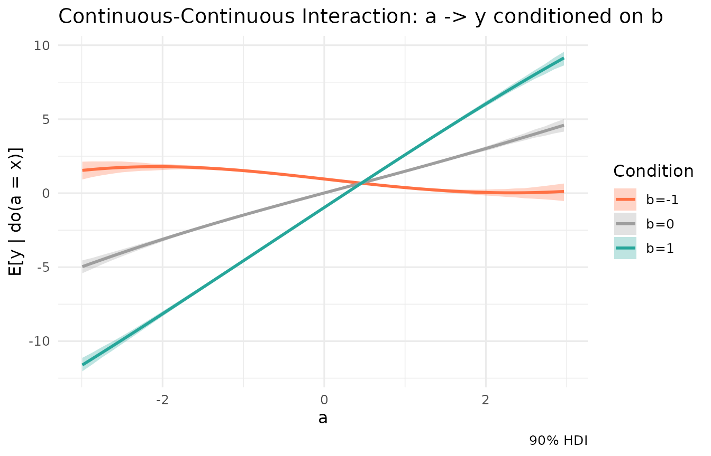

In traditional linear modelling (lm), interactions
between variables must be explicitly specified by the researcher (e.g.,
y ~ a * b). If you forget to include the interaction term,
the model is forced to assume that the effect of a is
strictly independent of b, leading to biased or incomplete
estimates.
Kagu takes a different approach. Because Kagu models each node as a Gaussian Process over an eigen-basis of its parents, interactions are learned automatically. The GP naturally spans the multi-dimensional surface of its inputs, capturing non-linearities and interactions without any explicit formula from the user.
In this vignette, we’ll look at how to recover and visualise a continuous-continuous interaction using Kagu’s effect estimation.
A system with a strong interaction
Let’s simulate a system where and are independent causes of , but they interact multiplicatively. The true data-generating process is:
Because of the positive interaction term, the effect of on heavily depends on the value of . If is positive, has a strong positive effect. If is negative, ’s effect might even become negative!
n <- 500
a <- rnorm(n)
b <- rnorm(n)
y <- 1.5 * a - 1.0 * b + 2.0 * (a * b) + rnorm(n, sd = 0.5)
df <- data.frame(a, b, y)We define our Kagu model as usual and fit it. Notice that we do not tell Kagu about the interaction.
The marginal effect
If we ask Kagu for the effect of a on y
without specifying anything else, it integrates out the uncertainty and
natural distribution of b over the dataset.
# The average marginal gradient of a -> y
mod$effects("a", "y")$summary()
#> # A tibble: 1 × 8
#> source target from to mean sd hdi_lower hdi_upper
#> <chr> <chr> <dbl> <dbl> <dbl> <dbl> <dbl> <dbl>
#> 1 a y -0.0300 0.970 1.41 0.108 1.25 1.59The average effect is positive (around 1.5), which matches the main
effect of a in our simulation. However, the standard
deviation/HDI is quite wide. That’s because the “true” effect of
a is not a single number-it’s highly variable depending on
b.
Conditioning to reveal the interaction
To probe the interaction, we can estimate the effect of
a on y while conditioning
b at specific values using the conditions
argument.
Let’s look at the gradient (the local slope) of
a -> y when
,
,
and
:
# Slope when b = -1
mod$effects("a", "y", conditions = list(b = -1))$summary()
#> # A tibble: 1 × 8
#> source target from to mean sd hdi_lower hdi_upper
#> <chr> <chr> <dbl> <dbl> <dbl> <dbl> <dbl> <dbl>
#> 1 a y -0.0300 0.970 -0.621 0.0526 -0.709 -0.537
# Slope when b = 0
mod$effects("a", "y", conditions = list(b = 0))$summary()
#> # A tibble: 1 × 8
#> source target from to mean sd hdi_lower hdi_upper
#> <chr> <chr> <dbl> <dbl> <dbl> <dbl> <dbl> <dbl>
#> 1 a y -0.0300 0.970 1.46 0.0437 1.39 1.53
# Slope when b = 1
mod$effects("a", "y", conditions = list(b = 1))$summary()
#> # A tibble: 1 × 8
#> source target from to mean sd hdi_lower hdi_upper
#> <chr> <chr> <dbl> <dbl> <dbl> <dbl> <dbl> <dbl>
#> 1 a y -0.0300 0.970 3.59 0.0466 3.52 3.68The model successfully recovered the interaction! * At , the expected slope is . Kagu estimates . * At , the expected slope is . Kagu estimates . * At , the expected slope is . Kagu estimates .
Visualising the interaction with sweeps
We can visualise this interactive surface by requesting
sweep = TRUE. Rather than computing the effects one at a
time and combining them manually, we can pass a list of conditions
directly to $effects().
Kagu will automatically compute the sweep under each condition,
bundle them together, and overlay them seamlessly when you call
$plot()!
# Request full sweeps of a -> y at different levels of b
eff_multi <- mod$effects("a", "y", sweep = TRUE, conditions = list(
list(b = -1),
list(b = 0),
list(b = 1)
))
# Plot the interaction seamlessly
eff_multi$plot() +
scale_color_manual(values = c("b=-1" = "#ff7043", "b=0" = "#9e9e9e", "b=1" = "#26a69a")) +
scale_fill_manual(values = c("b=-1" = "#ff7043", "b=0" = "#9e9e9e", "b=1" = "#26a69a")) +
ggtitle("Continuous-Continuous Interaction: a -> y conditioned on b")
The diverging slopes clearly show the interaction effect.
By treating causal mechanisms as flexible Gaussian Processes, Kagu
frees you from having to guess or pre-specify the exact functional form
of your causal relationships. Interactions are automatically detected,
naturally accommodated, and easily visualised using the
conditions argument!